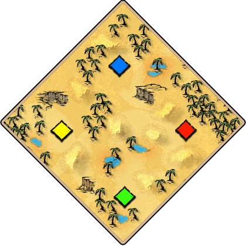

阿拉伯半岛 Arabia开放陆图

地图特点
阿拉伯半岛：干旱，贫瘠的沙漠，有战略高地，但植物和水源稀少。
开局参考
优先练习侦察骑兵或步弓开局，利用封建兵力保护资源。裸直城需要先确认安全，不能仅凭文明适合骑士就跳过防守。
推荐文明
来源与核对日期
地图与开局

阿拉伯半岛：干旱，贫瘠的沙漠，有战略高地，但植物和水源稀少。
优先练习侦察骑兵或步弓开局，利用封建兵力保护资源。裸直城需要先确认安全，不能仅凭文明适合骑士就跳过防守。
来源与核对日期
#/civ/…。匈奴两列都在，无角标。fl/pk 生成。